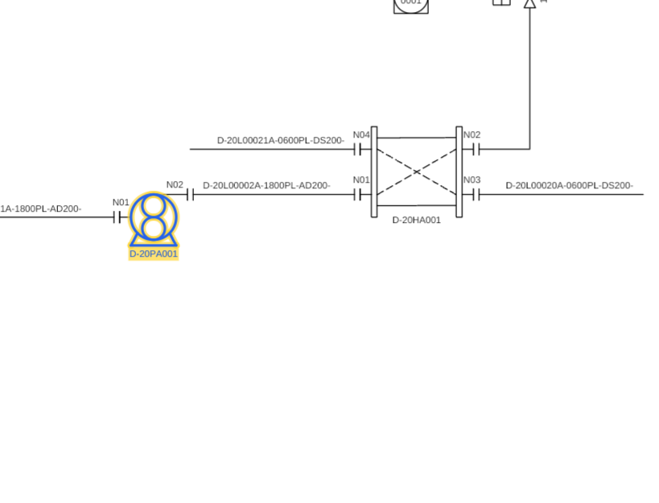
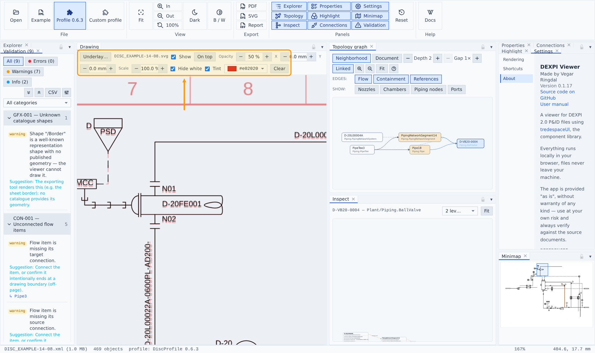

Viewing the drawing
Navigation
- Mouse wheel zooms at the cursor; drag pans. Ribbon → View has Fit, zoom in/out and 100% (with hotkeys).
- The Minimap shows the whole sheet with a live viewport rectangle — click or drag it to navigate.
- Double-clicking objects in panels zooms the drawing to them.
Selection

Click anything in the drawing to select it — the Explorer tree, Properties, Connections and Inspect all follow. Ctrl/Cmd-click toggles multi-selection (also on the canvas); Shift-click range-selects in the tree. Hovering rows in panels highlights the object on the canvas.
Selection renders as a marker-pen yellow halo tracing the object's own geometry underneath the blue re-stroke — not a bounding box, so a large exchanger doesn't flood its whole footprint. Selected text gets a filled yellow rect instead (embolden-by-doubling reads blurry); Settings → Rendering → Backdrop behind selected text turns that off. Dashed lines stay dashed when selected or highlighted — a selected heat-traced pipe keeps its trace distinguishable from the pipe itself.
Verification underlay

The toolbar above the drawing loads a reference image, SVG or PDF as an alignment underlay, stretched onto the diagram extent — the official DISC renderings align exactly. Controls:
- Show, On top (draw over instead of under the drawing) and Opacity.
- X / Y / Scale nudges (0.1 mm steps) for scans that need alignment.
- Hide white multiply-blends the underlay so its paper background disappears — only its ink shows.
- Tint recolors the underlay's ink via a color picker (default red): red reference under black drawing makes any deviation pop.
When the underlay sits under the drawing, the sheet's white paper is suppressed automatically so the reference shows through.
Rendering settings
Settings → Rendering: minimum stroke width (px), stroke width scale, grid, and unit display (conventional symbols vs spec unit names in the Properties panel).